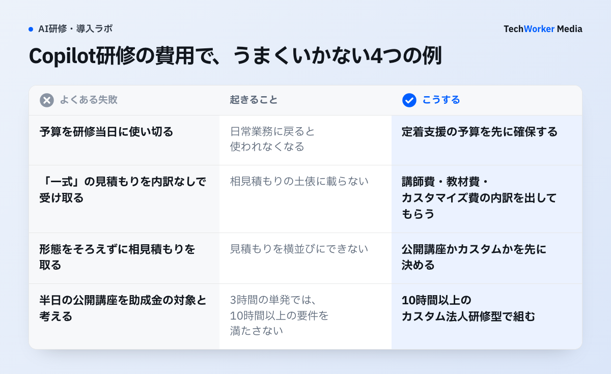
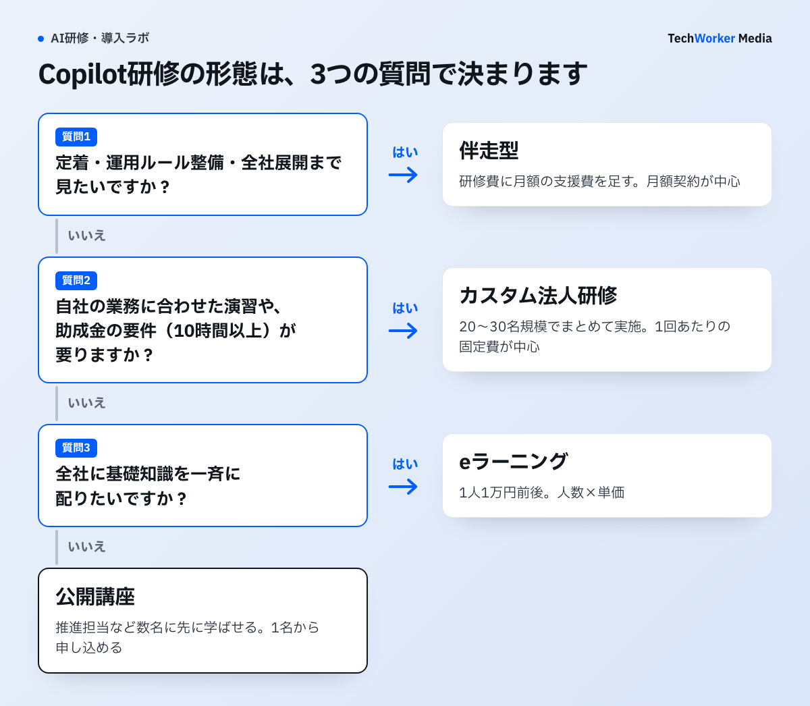

Microsoft Copilot研修の費用相場はいくらですか？
公開講座は1人あたり税込13,500円〜77,000円、eラーニングは1万円前後です。カスタム研修は個別見積もりです。
Microsoft Copilot（有償ライセンスで使うMicrosoft 365 Copilotを含む）の研修は、価格が公開されているものとされていないものに分かれます。公開されているのは、1名から申し込める公開講座とeラーニングです。公開されていないのが、企業単位で実施するカスタム法人研修です。
2026年8月時点で、各社公式サイトに載っている公開価格は次のとおりです。
- Microsoft「Microsoft 365 Copilot トレーニング」：公式イベント（対面・オンライン）、無料
- 大塚商会「Copilot for Microsoft 365 活用研修」：eラーニング、10,000円（税別）
- 富士通ラーニングメディア「【eラーニング】Copilot講座（M365編）」：標準学習2時間・8週間、11,000円（税込）
- インソース「（半日研修）Copilotのはじめ方研修」：公開講座・オンライン（3時間）、14,300円（税込）。会員は13,500円
- 富士通ラーニングメディア「【集合】はじめてのMicrosoft 365 Copilot」（MS4004）。集合研修（半日）で、33,000円（税込）
- トレノケート「Copilot for Microsoft 365 のユース ケースを使って従業員を強化する」（MS-4004）。オンラインLive（1日・講義＋デモ）で、77,000円（税込）
価格や開催形式は改定されます。申し込み前に、各社サイトで最新情報を確認してください。
同じMicrosoft公式コース（MS-4004）をベースにした研修でも、価格には幅があります。半日・集合の33,000円から、1日・オンラインLiveの77,000円までです。コース名だけでは比較できません。時間数、形式、演習の有無で中身を見ます。
eラーニングと講師付き研修でも、提供するものが違います。前者は知識のインプットです。後者は、講師への質問や演習を含む学習体験です。
Microsoft自身も、公式サイトで無料のトレーニングイベントを案内しています。Microsoft Learnには、無料の自習教材もあります。基礎知識だけなら費用はかからない、というのが2026年の前提です。有償研修に払う価値は、自社業務への落とし込み、演習、定着設計にあります。
なお、Microsoft 365 Copilotの利用ライセンス費用は、どの形態でも研修費とは別です。Copilot Studioでエージェントを作る開発寄りの研修は、利用者向け研修とは別枠の費用になるのが一般的です。詳しくはCopilot Studio研修の記事で扱います。
カスタム研修の見積もりは、どんな手順で評価すればよいですか？
形態を決め、公開講座の単価で基準線を引き、内訳を確認し、助成金と定着の予算まで見て評価します。

- 先に研修の形態を決めます。公開講座なのか、カスタムなのかを決めてから、相見積もりを取ります。形態をそろえずに聞くと、見積もりを横並びにできません。
- 「公開講座の単価×人数」で基準線を引きます。カスタム研修は、人数×単価で決まりません。講師の稼働、教材のカスタマイズ、演習環境の準備といった、1回あたりの固定費が中心です。受講人数が増えても、総額はあまり変わりません。20名なら、半日公開講座13,500円×20名で27万円です（会員価格での試算）。見積もりがこれを上回る場合は、その差額分のカスタマイズ・演習・フォローが入っているかを、内訳で確認します。
- 7つの確認項目で見積もりを同じ土俵に載せます。カスタム研修の見積もりは「一式」で届くことが多く、そのままでは比較できません。商談で、次の7点を聞きます。
- 助成金を使えるかを確認します。OFF-JT10時間以上などの要件があり、設計の段階から織り込みます。次の節で制度の事実を整理します。
- 定着支援の予算を先に確保します。「研修後、誰が・何を使って定着させるか」を決め、必要な予算を確保してから、残りで研修形態を選びます。
手順3で確認する7点は、次のとおりです。
- 時間数と演習の比率。「講義と演習の時間配分は？」と聞きます。同じ1日研修でも、講義中心と演習中心では得られるものが違います。
- ライセンス・演習環境。自社のMicrosoft 365 Copilotライセンスが必要かを聞きます。ライセンス費か検証環境の提供かで、実質コストが変わります。
- カスタマイズの範囲。演習を自社の業務・文書に差し替えられるかを聞きます。汎用教材のままなら、公開講座との差額の根拠が薄くなります。
- 見積もりの内訳。講師費・教材費・カスタマイズ費を分けて出せるかを聞きます。内訳が出ない見積もりは、比較できません。
- 資料の二次利用。研修資料を社内展開・再利用できるかを聞きます。可なら、未受講者への展開コストが下がります。
- フォローの有無と費用。研修後の質問対応やフォロー会が含まれるかを聞きます。含む、別料金、なしで、定着フェーズの追加予算が変わります。
- 助成金対応。要件を満たす設計と書類対応が可能かを聞きます。OFF-JT10時間以上や、計画届の事前提出が要件です。
7点すべてを聞く必要はありません。最低ラインは「見積もりの内訳」と「カスタマイズの範囲」の2つです。この2つに明確に答えられる会社は、残りの項目にもたいてい答えられます。
Copilot研修に助成金は使えますか？
人材開発支援助成金の対象になりえます。経費助成は中小最大75%、大企業60%で、1人あたり経費30万円が上限です。
厚生労働省の人材開発支援助成金「事業展開等リスキリング支援コース」があります。新規事業の立ち上げ、業務改革、DX推進などに伴う訓練が対象です。生成AIを組織的に業務へ組み込む取り組みは、AI活用という新分野へのスキル習得として、該当しうる事案とされています。制度の骨子は次のとおりです。
- 経費助成：中小企業で最大75%、大企業で最大60%です。1人あたり経費30万円が上限です（中小企業・訓練10〜100時間未満の場合。時間数が増えると上限も上がります）。1事業所1年度で1億円の上限もあります。
- 賃金助成：訓練時間に応じて、中小企業1,000円/時間、大企業500円/時間（最大）です。動画閲覧型のeラーニング部分は、賃金助成の対象外です。
- 主な要件：OFF-JT10時間以上のカリキュラム、訓練開始前の計画届の提出、雇用保険被保険者が対象であることです。経営者・役員は対象外です。
- 2026年3月改正：人事・人材育成計画に基づく訓練も、対象が拡大されました。
半日3時間の公開講座を単発で受けても、OFF-JT10時間以上の要件は満たしません。助成金を前提にするなら、10時間以上のまとまったカリキュラムを組む、カスタム法人研修型が現実的です。
助成金は、申請すれば必ずもらえるお金ではありません。該当性の事前確認（管轄労働局・社労士）、計画届の事前提出、訓練実施の証跡、支給申請という手順を踏みます。最終的な受給可否は、管轄労働局の審査で決まります。受給を前提に予算を組まず、認められれば負担が下がる制度として扱います。
Copilot研修の費用で、うまくいかない例にはどんなものがありますか？
予算を研修当日に使い切る、「一式」の見積もりで比べる、助成金を前提に予算を組む、の3つが代表的です。

- 予算のすべてを研修当日に使い切る。研修直後は利用が伸びても、日常業務に戻ると使われなくなります。この「受けて終わり」は、研修の質よりも、研修後の設計で決まります。詳しくはCopilotが定着しない原因と定着施策で扱います。
- eラーニングだけで横展開する。知識の底上げには効きますが、自社業務のどこでどう使うかへの変換が、個人任せになりやすくなります。
- 形態をそろえずに相見積もりを取る。公開講座なのかカスタムなのかが違うと、見積もりを横並びにできません。
- 「一式」の見積もりを内訳なしで受け取る。内訳が出ない見積もりは、相見積もりの土俵に載りません。
- 半日の公開講座を助成金の対象と考える。3時間の単発講座は、OFF-JT10時間以上の要件を満たしません。
- 助成金の受給を前提に予算を組む。受給可否は、管轄労働局の審査で決まります。
定着支援の中身は、業務別プロンプト集の整備、利用ルール・ガイドラインの策定、定例のフォロー会、活用度の計測などです。どこまでやるかは組織の規模と目的によるため、一律の金額相場は示せません。
TechWorkerは、上場企業を含む37社・2,500名の生成AI支援を行っています。その中で、「研修＋型づくり＋フォロー」を一体で設計した組織は、活用が持続する傾向があります。費用の多寡よりも、配分が最初の論点です。
定着が業務プロセスの見直しまで進むと、研修は費用でなく業務改革の投資になります。この段階はCopilotによるBPR（業務改革）の記事で扱います。
研修の形態ごとに、費用の構造はどう違いますか？
少人数は公開講座、全社の底上げはeラーニング、自社業務に合わせるならカスタム、定着まで見るなら伴走型です。

Copilot研修は、大きく4つの形態に分かれます。単価の高い安いでなく、何にお金を払う構造かで見ると、自社に合う形態を判断できます。
| 形態 | 費用の目安 | 費用構造 | 向いている場面 | 向かない場面 |
|---|---|---|---|---|
| eラーニング | 1人1万円前後 | 人数×単価 | 全社に基礎知識を一斉配布したい／集合の時間を確保できない | 手を動かす演習／自社業務への落とし込み |
| 公開講座 | 1人1.4万〜7.7万円 | 人数×単価 | 推進担当など数名に先に学ばせたい／1名から申し込みたい | 大人数（総額が人数に比例）／自社データ・自社環境での演習 |
| カスタム法人研修 | 非公開・個別見積もり | 1回あたりの固定費（講師・教材開発・カスタマイズ）が中心 | 20〜30名規模でまとめて実施／自社の業務・環境に合わせた演習／助成金要件（10時間以上）を満たす設計 | 受講者が数名（1人あたりが割高に） |
| 伴走型（研修＋定着支援） | 月額契約が中心 | 研修費＋月額の支援費 | 研修後の定着・運用ルール整備・全社展開まで見たい | 単発で知識だけ入れたい場合 |
2026年8月時点・各社公式サイトより。
よくある質問
公開講座は2026年8月時点で1人あたり税込13,500円〜77,000円（半日〜1日）、eラーニングは1人1万円前後が実勢です。カスタム法人研修は公開価格を出していない会社が多く、人数・時間数・カスタマイズ範囲による個別見積もりが中心です。
人材開発支援助成金（事業展開等リスキリング支援コース）の対象になりうる場合があります。経費助成は中小企業で最大75%・大企業で最大60%、1人あたり経費30万円が上限です。OFF-JT10時間以上などの要件があり、最終的な受給可否は管轄労働局の審査で決まります。
受講人数によります。数名までなら、1人単価で払う公開講座が合います。20〜30名規模でまとめて実施するなら、1回あたり費用が中心のカスタム研修のほうが、1人あたりでは下がりやすい構造です。見積もりを取ったら「公開講座単価×人数」を基準線にして比べると判断しやすくなります。
あります。Microsoftが公式の無料トレーニングイベント（対面・オンライン）を開催しています。Microsoft Learnでも、自習教材が無料公開されています。基礎の習得には使えますが、自社業務への落とし込みや組織全体での定着は、別途自社で設計する必要があります。
次の一歩は何から始めればよいですか？
研修の形態を決め、公開講座の単価で基準線を引いて、各社の見積もりを内訳つきで取り寄せます。
- 公開講座とカスタムのどちらで進めるかを決めます。
- 「公開講座の単価×人数」で、見積もりを評価する基準線を引きます。
- 研修後に誰が何を使って定着させるかを決め、その予算を先に確保します。
形態の選定から見積もりの評価、定着まで、TechWorkerが伴走します。検討段階のご相談だけでも歓迎です。
出典・確認日
公開価格は、2026年8月時点の各社公式サイトの掲載内容です。助成金は、厚生労働省の人材開発支援助成金「事業展開等リスキリング支援コース」の制度内容です。